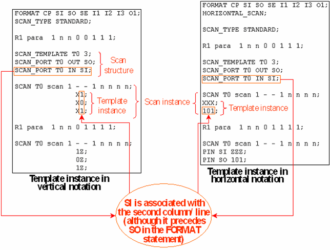

Defining the Scan Instances
A scan instance specifies data for a template. This data consists of the scan parts and one parallel part.
The first line of a scan instance has the following format:
SCAN <template_name> <ASCII_dvc> <sequence_of_state_characters>;
The characters of <sequence_of_state_characters> define the parallel part. They are mapped to pins according to the FORMAT statement. The characters for the scan pins are ignored, but some character (for example ‘-') must be present for them.
Immediately below the SCAN statement, you can insert a SCAN_PAD statement, which defines the scan padding character for an arbitrary pin. In particular, you can define a padding character for the parallel part of the scan instance, which is not possible by any other means. The format of the SCAN_PAD statement is:
SCAN_PAD <ASCII_dvc> <pin> <padding_character);
The following lines of a scan instance specify the ASCII scan parts. These can be defined in two different formats, vertically and horizontally.
In vertical notation, which is the default, every line contains one ASCII scan part. Every column contains the state characters for one scan pin. The columns are mapped to pins according to the order of the scan pin definitions for the respective template, not theFORMAT statement.
The horizontal notation must be explicitly selected by specifying HORIZONTAL_SCAN immediately below the SCAN_TYPE statement. It applies to the whole ASCII vector file; that is, if it is specified, all scan vectors in this file must be specified in horizontal notation.
In horizontal notation every line contains the state characters of one pin. In this notation, the lines must also correspond to the order of the scan pin definitions for the respective template. You can, however, override this mapping by explicitly specifying the scan pin with which the line is to be associated. If the same state characters are to be applied to more than one pin, you can even specify several pins or pin groups. Thus, the format of the ASCII scan vector lines looks in this notation as follows:
[PIN (<pin_1>|<pin_gr_1>),...,(<pin_n>|<pin_gr_n>)] <sequence_of_state_characters>;
Example
The following figure illustrates the terminology and the differences between vertical and horizontal notation of the scan instances:
